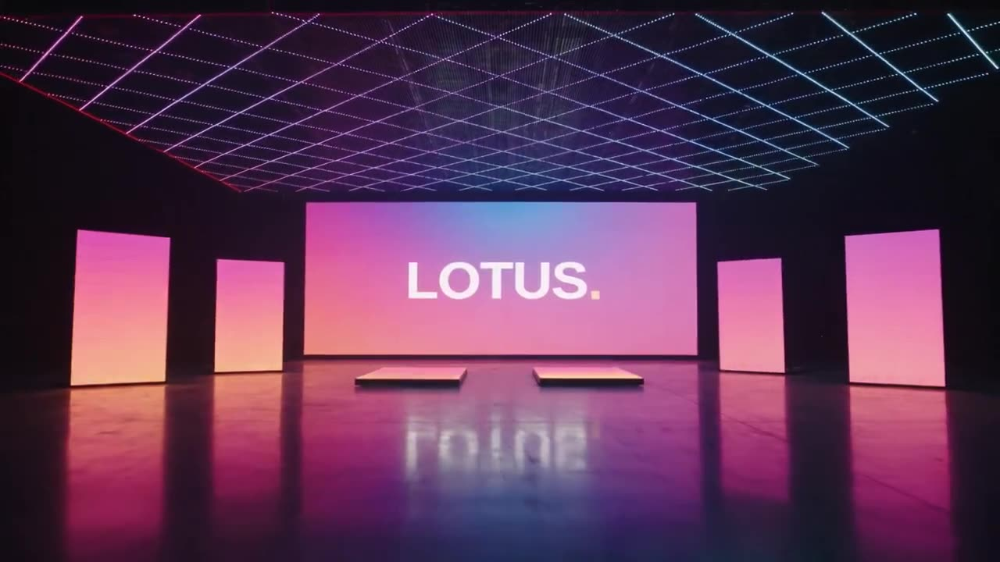
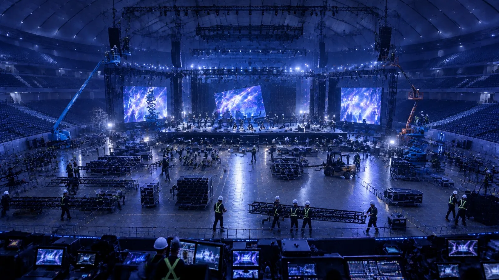
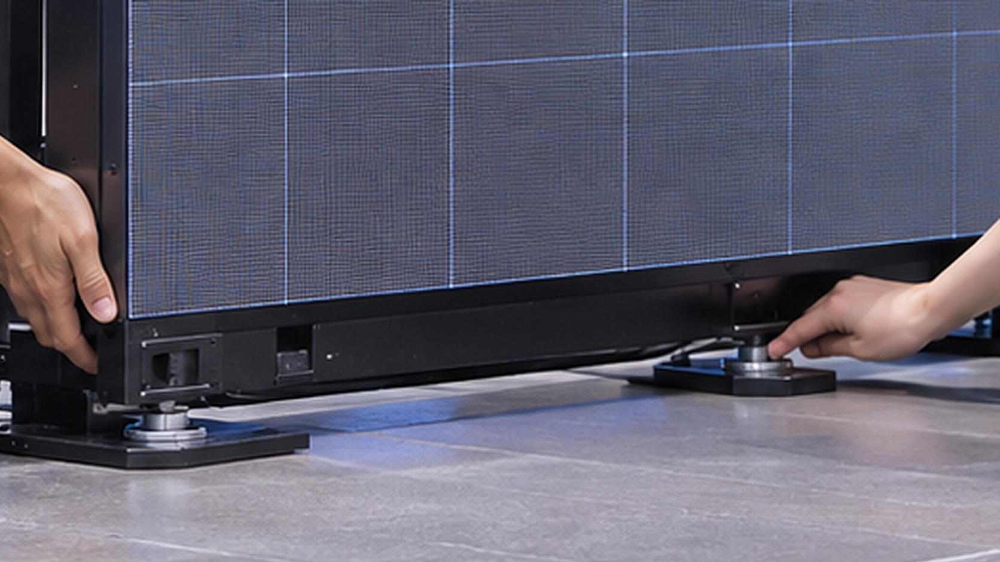
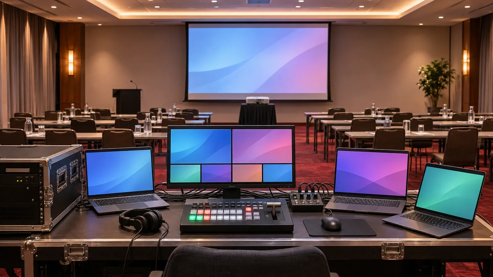

事前打ち合わせ
図面・進行表・機材リストを、担当全員で読み合わせる。誰が何を持ち、どこで何を確かめるかを、ここで決める。
ご依頼の流れ ↗

EQUIPMENT GUIDE機材ガイド 94 機種↗LOTUS / EVENT VISUAL & TECHNICAL
LOTUS は、その3秒のために準備する会社です。
技術スタッフの手配と、映像機材レンタル。
設営・本番・撤去の、必要な工程だけ。
実績の件数や顧客名は、相談のときに直接お伝えします。
01 / TRY IT
吊るか、床から積むか。大きさを選んで「設営スタート」を押すと、指示を出す人と作業スタッフが早送りで組み上げます。最後はプロセッサーで、画面を自分で切り替えられます。
02 / ONE DAY
技術スタッフが見ているのは、機材ではなく「次に止まりそうな場所」です。準備から撤去までを、順に追います。
図面・進行表・機材リストを、担当全員で読み合わせる。誰が何を持ち、どこで何を確かめるかを、ここで決める。
ご依頼の流れ ↗
倉庫で機材を検品し、ケーブルは巻き直す。カゴ台車、フライトケース、LED ケースに、現場で出す順を考えて詰めていく。
倉庫での準備と戻り ↗
トラックに積み、会場の搬入口へ。冷えた機材は取扱説明書に従って環境になじませ、内部も含め結露が解消したと判断できるまで通電しません。
露点という境目の話 ↗
LED は、重さがトラスへ、床へ、どう伝わるかを先に決めてから組む。順番は会場と構造で変わる。
数百 kg の壁は、どこで立っているか ↗
客席が空のうちに、テストパターンで色と継ぎ目を一枚ずつ。素材の順番、切り替えの合図、変更の連絡先は、覚えているかではなく、言えるかで確かめる。
熟練者ほど読み上げる理由 ↗
発煙・異臭・漏電などの安全異常では、作業を止めて安全確保と責任者への連絡を優先。通常の映像不具合は、進行表と事前に決めた停止・切り替え条件を確認します。
止める勇気より、止める条件 ↗終演の 5 分後から、客席の見えないところで逆再生が始まる。数量・付属品・状態を、次の現場のために。
戻りを確かめる工程 ↗客席は満席。大きな画面は、まだ真っ黒。さて、なぜでしょう。
登場の一瞬を、いちばん印象的にするため。あえて映さず、照明や音とタイミングをそろえて映像を出す演出もあります。画面を埋めるだけが、映像の仕事ではありません。
03 / READ
科学・経営・歴史のどこかに、現場の答えが落ちています。1本 8分、日常のたとえから始めます。
04 / WHAT WE DO
よく言われる一言から、お答えします。
05 / TALK
日程、会場、頼みたい工程。決まっていることと未定のことを、そのまま教えてください。担当範囲の整理から一緒にやります。